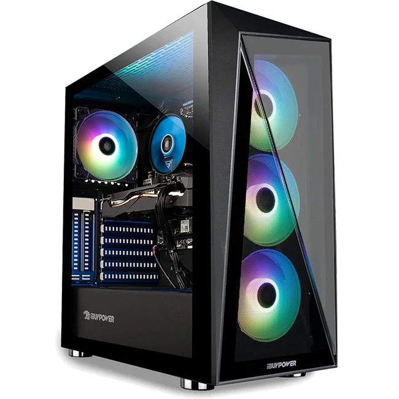

Reparación de computadoras de escritorio (Desktop), ya sean de Gabinete (genéricas) o todo en uno (all in one).
Reparación de Laptops de todas las marcas como HP, Dell, Apple, Acer, Gateway, Toshiba, también contamos con refacciones originales y genéricas.

Venta, mantenimiento y reparación de equipos gamer, armamos tu equipo a tu medida y te asesoramos de que es lo que mejor se adapta a tus necesidades.
Traenos tu computadora y te podemos ayudar a instalar el sistema operativo más nuevo de Microsoft Windows 11, (ocupamos revisar si tu equipo lo soporta).
Trae tu computadora Mac y te instalamos desde el macOS mas nuevo como Monterey, Big Sur, Catalina, Mojave, High Sierra y Sierra; ya no instalamos ninguún OS X (Obsoletos).
Solamente instalamos la versión de Ubuntu 20.04, debido a que es gratis y por lo general es en la compra de una PC Gamer con Windows 10 Trial Version.

 y por lo general lo hacemos para servidores ya sean tanto físicos o como Virtuales (Checar precios porque se cobra por hr).")